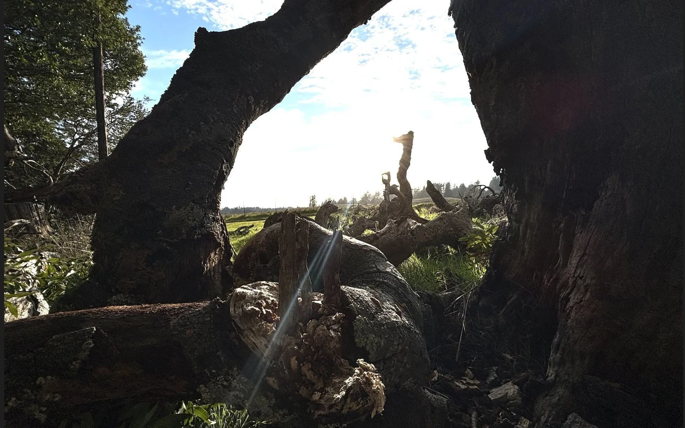
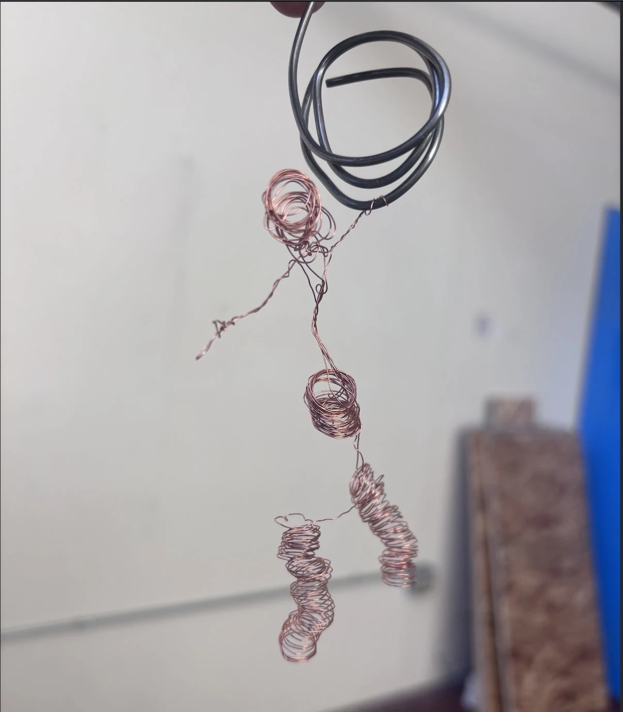
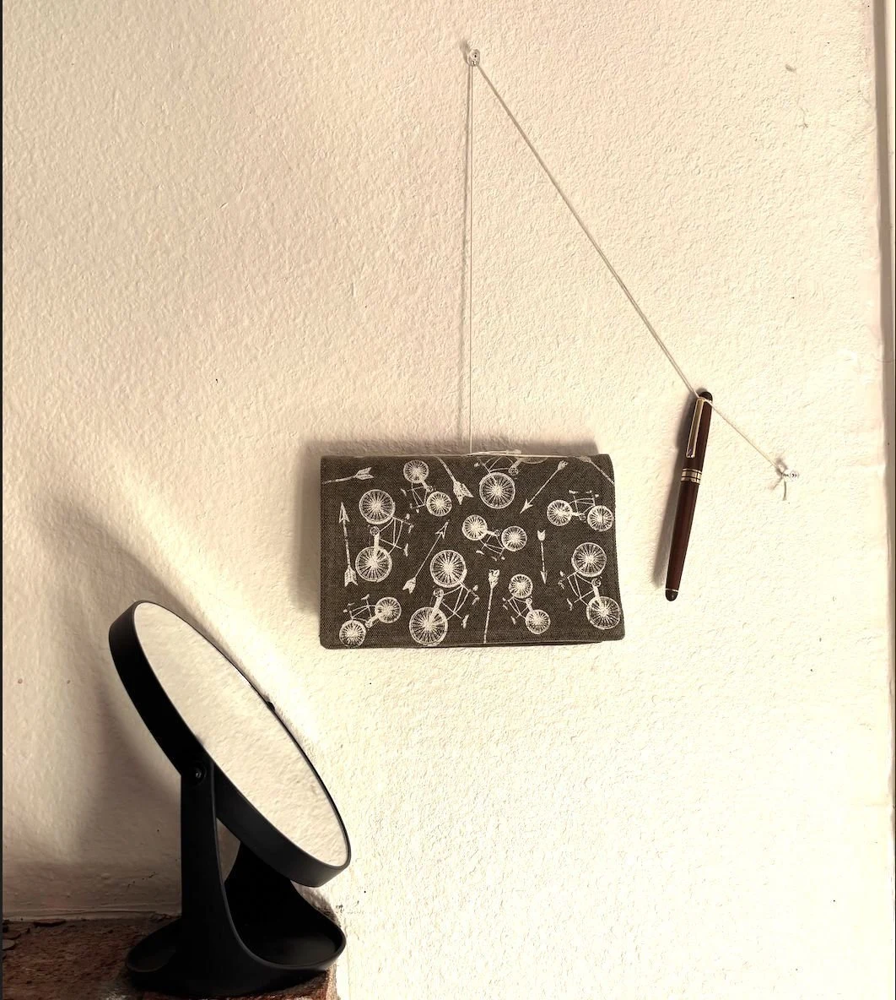
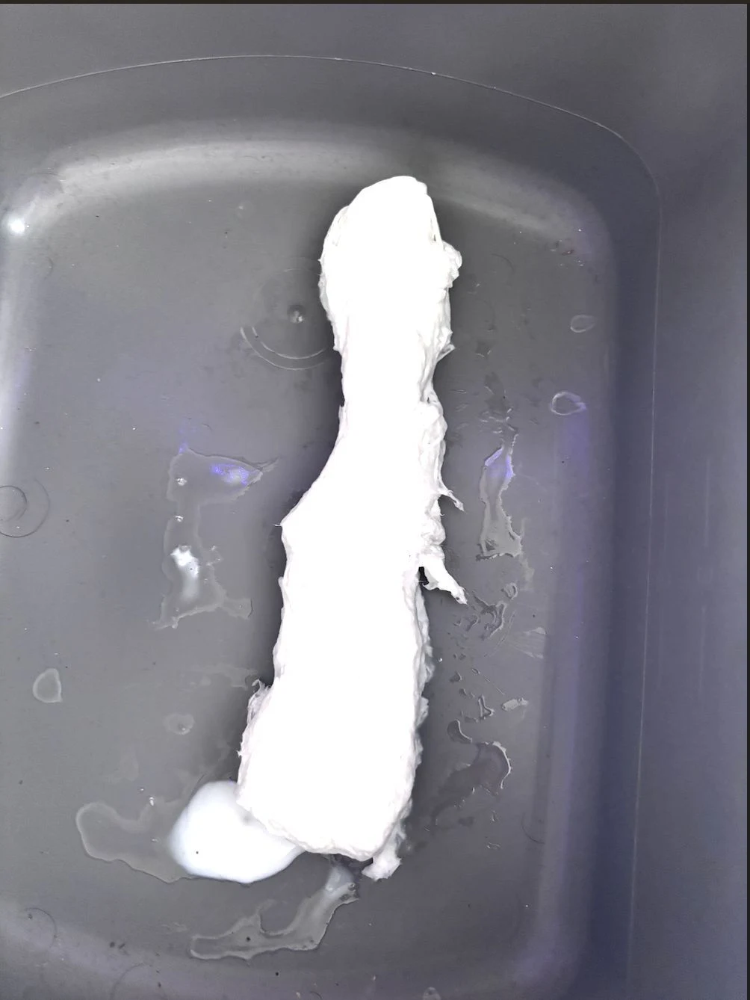
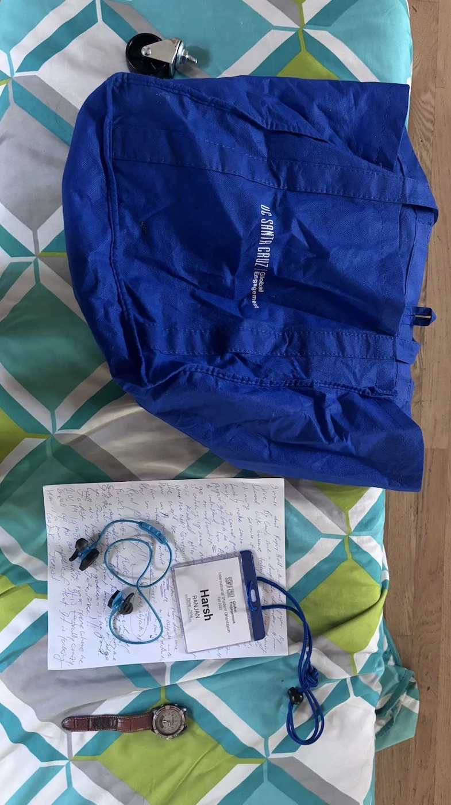

Microgrid Manager
Microgrid Manager3 panelslocal appliance inference
Making a home’s energy data useful.
Local appliance inference and a dashboard that turns household telemetry into decisions.
Python / PyTorch / ONNX↗
Edge inference. Concurrent systems. Structural RTL.
I’m Harsh, a computer engineering senior at UC Santa Cruz.
Problem → architecture → implementation → validation.
Engineering decisions, with their tradeoffs made explicit.
Microgrid ManagerLocal appliance inference and a dashboard that turns household telemetry into decisions.
Profile first, then improve the kernels that actually dominate the workload.
Eight molecules, one membrane, and a complete game in structural Verilog.
Concurrent request handling, bounded caching and encrypted traffic forwarding.
A separate language-model layer that makes energy anomalies easier to review.
TesphaseA mobile product exploring better use of household solar without additional customer hardware.
Close readings and engineering reflections.
Each begins with a question worth pursuing.
Prometheus meets Oppenheimer. Two gifts to humanity, and a conversation about what their makers owe the world.
Read essayFlood, famine and fire become more than disasters in these myths: they produce explanations, duties and institutions. Through Gilgamesh, the Epic of Creation, Ovid and Demeter, I trace how awe can harden into authority.
Read essayThis essay compares the legal mechanisms behind formal autonomy and practical subordination. It argues that different constitutional traditions can sustain similar power imbalances, while leaving different openings for resistance.
Read essaySze, Hamilton and Parker make connection feel unstable, laborious and sometimes coercive. Alongside Bishop’s writing, these responses explore how installation uses space, time and bodily attention to make viewers part of the work.
Read essayA reading of Royce through iteration, early risk discovery and documentation. The essay challenges the familiar waterfall shorthand and asks how structured feedback keeps complex engineering projects adaptable.
Read essayA candid account of the Slug Board MVP’s integration problems. I examine stale branches, unverified backend dependencies and isolated development, then argue for cross-cutting user stories and earlier integration checks.
Read essayI also make things with wire, paper and found objects. Sometimes the medium is a sentence.

Photography · January 2026

Copper wire · February 2026

Wearable sculpture · February 2026

Still-life photography · January 2026

Paper lamination · February 2026

Found-object assemblage
Murakami’s Kafka on the Shore and Vikram Chandra’s Sacred Games are touchstones. I’m drawn to writing that unsettles familiar ways of seeing, from Hindi literature and mythology to political economy.
I write about democratic institutions, read myths as arguments about power, and think about cinema and memory. Studio work gives those questions another form: something I can arrange, bend, build or photograph.
Engineering, product thinking and the work
of making complex ideas understandable.
UCSC · Renewable Resilient Energy Systems Lab
Deploying and debugging AnyLog / EdgeLake infrastructure for distributed electrical anomaly detection under Dr. Pat Mantey.
UCSC · Microgrid Manager
Led the model, labeling and dashboard work for a residential energy system. Connected research decisions to a running deployment and weekly sponsor reviews.
UCSC · Applied Mathematics & Statistics
Grading, rubrics and student support across AM 10, AM 20 and STATS 5. I focus on making methods and reasoning clear.
Tesphase
Owned the roadmap and mobile architecture. More than 30 customer interviews informed shipped authentication, real-time sync and notifications. SC Launchpad 2025 winner.
Balat Enterprises
Translated customer feedback into React / Firebase product specifications and redesigned a customer-service tool. Reported outcomes include 40% fewer post-release bugs and a 30% retention increase.
Vyavshay Technologies
Used market research and campaign analysis to guide feature priorities for a rural mobility application, contributing to a reported 15% retention increase.
Also: AM 11A group tutoring and spiking-neural-network work associated with UCSC’s Neuromorphic Computing Group.
Open to new-grad opportunities in systems, embedded software and applied ML. UC Santa Cruz · graduating December 2026.